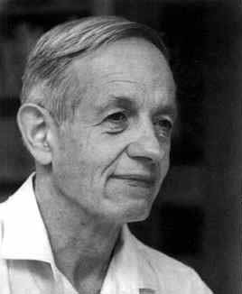
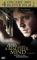

John Nash

13. Juni 1928 Bluefield, USA - 23. Mai 2015 New Jersey, USA
Nach dem Film "A Beautiful Mind" (2001) und seiner Nominierung als Nobelpreisträger
(1994 in Wirtschaftswissenschaften, zusammen mit Harsanyi and Selten), gilt Nash als einer der
bekanntesten Mathematiker unserer Zeit.
Auskunft über sein Leben gibt die folgende Rezension des Buches: Sylvia Nasar, »Auf den fremden Meeren des Denkens. Das Leben des genialen Mathematikers John Nash«. Aus dem Amerikanischen von Cäcilie Plieninger und Anja Hansen-Schmidt, München, Zürich, Piper 1999, ISBN 3-492-03800-X, 575 S.
Im Februar 1959 hält der Mathematiker Eugenio Calabi, Mitglied des höchst angesehenen Institute for Advanced Studies in Princeton, einen Vortrag am kaum minder angesehenen Massachusetts Institute of Technology in Cambridge bei Boston. Das Publikum besteht aus lauter hochkarätigen Fachleuten. Während Calabi spricht, beginnt in einer der hinteren Reihen plötzlich jemand laut zu reden.
Auskunft über sein Leben gibt die folgende Rezension des Buches: Sylvia Nasar, »Auf den fremden Meeren des Denkens. Das Leben des genialen Mathematikers John Nash«. Aus dem Amerikanischen von Cäcilie Plieninger und Anja Hansen-Schmidt, München, Zürich, Piper 1999, ISBN 3-492-03800-X, 575 S.
Im Februar 1959 hält der Mathematiker Eugenio Calabi, Mitglied des höchst angesehenen Institute for Advanced Studies in Princeton, einen Vortrag am kaum minder angesehenen Massachusetts Institute of Technology in Cambridge bei Boston. Das Publikum besteht aus lauter hochkarätigen Fachleuten. Während Calabi spricht, beginnt in einer der hinteren Reihen plötzlich jemand laut zu reden.
In diesem Augenblick jedoch fragt er seinen Vordermann so laut, dass alle im Saal es hören: »Vazquez, wussten Sie, dass ich auf dem Titelbild der Zeitschrift Life bin?« und fährt fort, man habe sein Photo dort so verändert, dass er wie Papst Johannes XXIII. aussehe. Nash insistiert so laut und so lange, dass Vazquez sich schliesslich umdreht und ihn fragt, woher er eigentlich wisse, dass jenes Titelbild ihn zeige. Erstens, antwortet Nash, sei Johannes (im Englischen: John) nicht der wahre Name des Papstes, sondern sein eigener Name, und zweitens sei die Dreiundzwanzig seine, Nashs, »Lieblingsprimzahl«. Alle haben den Wortwechsel mitbekommen. Calabi setzt seinen Vortrag fort, als wäre nichts gewesen.
Genie und Wahnsinn - die Beschreibung des Lebens von John Nash zwischen diese beiden, einst von Cesare Lombroso eingepflanzten Pole zu spannen, liegt nahe. Sylvia Nasar tut dies in ihrer Biographie, ohne sich auf Lombroso und seine psychiatrische Metaphysik einzulassen. Dennoch erweist sich ihr Thema als tückisch. Genie und Wahnsinn sind im Falle John Nashs nämlich offenbar durch Beschreibung nicht gleichermassen anschaulich zu machen. Die Verwirrungen im Gefolge der »paranoiden Schizophrenie«, die nach der oben geschilderten Episode bei John Nash diagnostiziert wurde, lassen sich besser erzählen und plastischer darstellen als die intellektuellen Hochleistungen, die er an den vorgeschobensten Positionen seines Fachgebietes vollbringt. Selbst versierten Fachkollegen bereitete es, wie Sylvia Nasar berichtet, oft erhebliche Mühen, überhaupt zu begreifen, worin die Relevanz und die Eleganz der Lösungen lag, die Nash für Probleme vorschlug, die als unlösbar galten. So kommt es, dass wir uns zusammen mit der Biographin auf jene wenigen Experten verlassen müssen, die imstande sind, seine Handschrift als Mathematiker zu beurteilen. Sie nennen die Art, wie Nash zu seinen Schlüssen gelangt, seine Theoreme entwickelt und Beweise führt, »genial«, und wir sind geneigt, ihnen zu glauben, auch wenn wir uns kein wirkliches Bild von dieser Genialität machen können.
Eine Einführung in John Nashs Arbeiten und sein Denken ist aus diesem Buch also nicht zu gewinnen, wohl aber eine Fülle von Innenansichten aus dem amerikanischen Wissenschaftsbetrieb zur Zeit des Kalten Krieges, die für interessierte Nicht-Experten wahrscheinlich viel aufschlussreicher sind. Die RAND-Corporation, der »Think Tank«, in dem Nash von 1951 bis zu seinem Hinauswurf im Jahre 1954 als Berater tätig ist, hat die Aufgabe, das Undenkbare (den Atomkrieg, die Wasserstoffbombe) zu denken. Und der Ausschuss des Senators McCarthy gegen unamerikanische Aktivitäten geht im Dienste einer staatlich verordneten Paranoia daran, das gesamte kulturelle und wissenschaftliche Leben des Landes zu durchleuchten. Dabei erzeugt schon das gewöhnliche Spiel der Rivalitäten und Intrigen bei der Vergabe von akademischen Ämtern und Würden einen enormen Druck. Hochleistungsmathematik hat mit dem Hochleistungssport immerhin so viel gemeinsam, dass wirkliche Grosstaten auf dem Gebiet der Mathematik von Leuten, die sie bis zu ihrem dreissigsten Lebensjahr nicht vollbracht haben, auch nachher nicht mehr erwartet werden.
Nash ist dreissig, als seine Geisteskrankheit offen ausbricht. Staunenswerte Leistungen hat er in den voraufgegangenen zehn Jahren in beachtlicher Zahl vollbracht, aber die gebührende Anerkennung ist ihm versagt geblieben: ein paar Stipendien, aber keine feste Professur, kein bedeutender Preis. Ausgezeichnet und eingestellt werden die anderen, die Konkurrenten, während er beim Schritt über die Schwelle der Dreissig den Boden unter den Füssen verliert. Auch sein privates Leben bietet ihm keinen Halt: ein Hin und Her zwischen verschiedenen Männern und einer Frau, Eleanor, die er nicht heiraten will, mit einem, seinem unehelichen Sohn, um den er sich nicht kümmert. Das persönliche Chaos wird noch grösser, als er sich von einer Studentin erobern lässt und sie heiratet. Auch mit Alicia hat er einen Sohn, und sie ist es, die nun mit wachsender Besorgnis aus nächster Nähe die Verrückungen in seinem Geist und seinem Verhalten wahrnimmt, bis zu dem Punkt, wo sie sich und ihr Kind so sehr gefährdet fühlt, dass sie gegen den Willen ihres Mannes dessen Einlieferung in eine psychiatrische Anstalt betreibt. Als Nash nach ein paar Wochen wieder entlassen wird, ist er nur scheinbar geheilt - und das erste von dreissig »verlorenen Jahren« hat eben erst begonnen.
Sylvia Nasar muss über ein grosses Geschick verfügen, Menschen zum Erzählen und zur Offenheit zu bringen. Immerhin handelt ihre Biographie von einem Lebenden, und ihre wichtigste Quelle sind Dutzende Interviews mit Leuten, die im Laufe der Jahre auf diese oder jene Weise in Beziehung zu John Nash getreten sind. Seinen Freunden, Kollegen und Rivalen, ehemaligen Studenten, den Angehörigen des Personals von Instituten, in denen Nash ein- und ausging, und nicht zuletzt einigen der Männer und den beiden Frauen, mit denen er sich im Laufe seines Lebens verbunden hat, entlockt Sylvia Nasar eine Geschichte mit vielen bedrückenden Szenen, die in der Erinnerung wiederzubeleben und preiszugeben den Befragten, die zugleich Beteiligte und Verstrickte waren, nicht leicht gefallen sein kann.
Aber nach langen Jahren hat diese Geschichte einen halbwegs glücklichen Ausgang. Die paranoide Schizophrenie wird von vielen für unheilbar gehalten, und Fälle von Gesundung sind tatsächlich sehr selten. Doch Ende der achtziger Jahre taucht John Nash aus seiner Geisteskrankheit auf. Er kann sich wieder der Mathematik zuwenden und bekommt 1994 zusammen mit zwei anderen Vertretern der »Spieltheorie«, dem Deutschen Reinhard Selten und dem aus Ungarn stammenden Amerikaner John Harsanyi, den Nobelpreis für Wirtschaftswissenschaften.
Was Nashs »Remission«, vielleicht sogar seine Genesung, nach so langer Zeit bewirkt hat, ist unklar. Sylvia Nasar vermutet, ein wichtiger Faktor sei eine Umgebung gewesen, die ihm seine Ruhe liess. Für Nash war dies nicht die Klinik und auch nicht der Schoss der Familie, sondern die Welt der Institute und Bibliotheken, der Teestunden in den Dozentenzimmern, der Vorträge und Vorlesungen. Princeton hat sich in seinem Fall als tolerante »Therapiegemeinschaft« erwiesen.
Nashs Beziehung zur Realität konnte sich wohl deshalb wieder stabilisieren, weil sie nie ganz abbrach. Sein letzter Halt sind die Zahlen. Sie garantieren ihm einen Rest von Ordnung. William Browder, der Vorsitzende der mathematischen Abteilung in Princeton, berichtet: »Nash war der grösste Numerologe, den die Welt je gesehen hat. ... Einmal rief er mich an, nannte mir Chrustschows Geburtsdatum und arbeitete sich dann geradewegs zum Dow-Jones-Index vor.«
Als »Phantom der Fine Hall« führt Nash in Princeton jahrelang ein akademisches Schattendasein. Er wandert durch die Gänge, sitzt in der Bibliothek, verharrt in Vorlesungssälen, schweift im Park umher. Manche Sekretärinnen fürchten sich vor ihm. Andere finden ihn harmlos. Auf den Tafeln der Seminarräume hinterlässt er seltsame Kreidebotschaften. Studenten, die von John Nash nie gehört haben oder ihn für tot halten, studieren sie genau, und manchmal schreiben sie sie Wort für Wort ab, um sie Jahre oder Jahrzehnte später seiner Biographin zu übermitteln: »Mao Tse-tungs Bar-Mizwa fand 13 Jahre, 13 Monate und 13 Tage nach Breschnews Beschneidung statt«. - »Harvard hat recht: es gibt eine Gehirnpanne.«
So willkommen diese und viele andere Fundstücke sind - gelegentlich wünscht man sich bei der Lektüre, die Autorin hätte angesichts der Fülle des Materials, das ihr die zahlreichen Interviews in die Hand gaben, entschlossener ausgewählt und ihren Rohstoff mit erzählerischen Mitteln stärker verdichtet, statt sich mit Reihung und Repetition zu begnügen. Auch die deutsche Übersetzung lässt Wünsche offen, namentlich beim Umgang mit dem erweiterten Infinitiv von »werden«: »In Princeton beginnt Nashs Denken drängend und konzentriert zu werden.« - »Die mathematische Fakultät ist im Begriff, recht bedeutend zu werden.« - »Er fühlte sich vom Institut angezogen ... und versuchte, dorthin berufen zu werden.« Vor allem im ersten Viertel des Buches treibt die stilistische Unbeholfenheit an Dutzenden von Stellen sonderbare Blüten, die offenbar kein Lektorat pflücken wollte oder konnte.
Die Lektüre dieses verstörenden Buches wird durch solches Ungeschick zwar hier und da gestört, aber dem Sog, den die Geschichte, je weiter man in ihr vorankommt, desto stärker entfaltet, kann dies nichts anhaben. Die mathematischen Leistungen ihrer genialen Hauptfigur mögen uns fern bleiben. Aber gerade weil John Nash nicht als Geistesheros und nicht einmal durchwegs in freundlichem Licht gezeigt wird, tritt uns der Bericht über sein Verschwinden im Wahnsinn und seine Wiederkehr besonders nah.
Zuerst erschienen in: Frankfurter Allgemeine Zeitung, 12.Oktober 1999(c) Reinhard Kaiser


Genie und Wahnsinn: John Nash (DVD)
Russell Crowe (Darsteller) u.a.